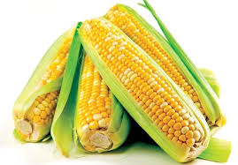

강냉이
최종수정일 : 2017-02-01 19:28:49
조회수 : 38
추천수 : 12
아침에 밥 차려먹으려니까 시간이 빠듯해서
간편하게 먹으려고 닥터유 에너지바를 샀어요.
어제 출근하면서 먹는데 이게 견과류가 들어서 조금 딱딱하잖아요.
그래서 세게 씹는데 와....
이가 갑자기 콱 쑤신다고 해야하나? 진짜 너무 아픈거에요.
걷다가 바로 멈춰서 뱉어보니까 엄청 딱딱한게 들어있더라구요.
견과류는 아닌거같고 돌도 아닌거 같고 이게 뭔지는 모르겠는데...
일단 챙겨서 출근하고 바로 고객센터에 연락했어요.
사진 보내달라 그래서 찍어보내고 답변 기다리고 있어요.
점심도 못먹겠어서 치과 다녀왔는데 어금니에 금이 갔다고 하네요.
이런 경우에 치료비 청구도 되나요?
혹시 이런 일 겪으셨던 분들 계시면 댓글 부탁드려요.